PROFINET Device4.1.0 |
 |

|
PROFINET Device4.1.0 |
|
|
The CODESYS development system is after registration available for download free of charge from the CODESYS Store.
Please consult the system requirements in the CODESYS store for the development PC.
It is recommended to install the full package.
For the CODESYS runtime on the SITARA AM64x Processor, the CODESYS Control for Linux ARM64 SL is required.
Without a valid license, the CODESYS runtime including the fieldbus functionality will execute for two hours and then exit.
To install the runtime package, the CODESYS development system must be started as administrator.
Installation is performed from within the CODESYS Package Manager.
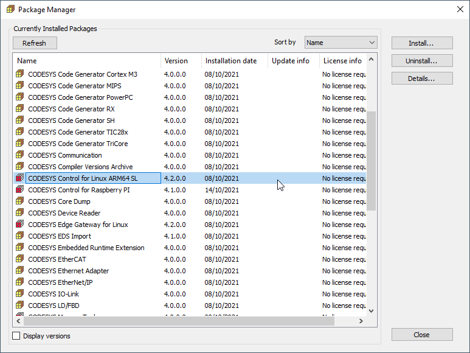
After the package is installed, the CODESYS runtime system must be installed on the AM64x SITARA Processor evaluation hardware.
Therefore prepare an SD Card with latest AM64x Arago Yocto Standard Image.
Log in to the Device via UART COM Port using user and password "root".
Setup the network interface settings required for your system.
For example fix your IP address of eth0 interface to static IP 192.136.0.200 as shown below in /etc/systemd/network/10-eth.network.
Open CODESYS Control for Linux ARM64 SL 4.2.0.0.package archive file and extract the files:
Dependancy/codemeter-lite_7.21.4611.501_arm64.deb
Delivery/codesyscontrol_linuxarm64_4.2.0.0_arm64.deb
Copy them over to the target and install:
scp Downloads/codemeter-lite_7.21.4611.501_arm64.deb root@.nosp@m.192..nosp@m.136.0.nosp@m..200:~
scp Downloads/codesyscontrol_linuxarm64_4.2.0.0_arm64.deb root@.nosp@m.192..nosp@m.136.0.nosp@m..200:~
Install
opkg -V2 install –nodeps –offline-root / –add-arch arm64:13 ./codemeter-lite_7.21.4611.501_arm64.deb
opkg -V2 install –offline-root / –add-arch arm64:13 ./codesyscontrol_linuxarm64_4.2.0.0_arm64.deb
add-arch is to get by the arm64 vs aarch64 definition difference with Debian
This is one-time and once there is CODESYS package manager support the Windows GUI can be used instead.
Execute the 2 hours limited runtime by:
Start the CODESYS development system and create a new standard project
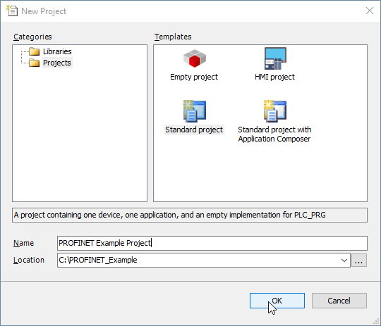
Select CODESYS Control for Linux ARM64 SL (3S - Smart Software Solutions GmbH) as a device and the programming language of your choice.
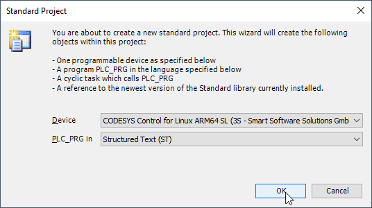
The development system creates the project structure and populates the structure of the device tree.
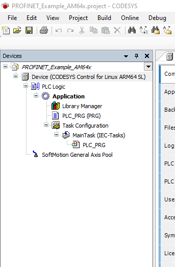
Before configuring the PROFINET network, the matching device description file must be installed to the CODESYS device repository.
Navigate to Tools → Device Repository in the menu system and install the file TI AM64X.R5F Simple.xml which is part of the distribution.
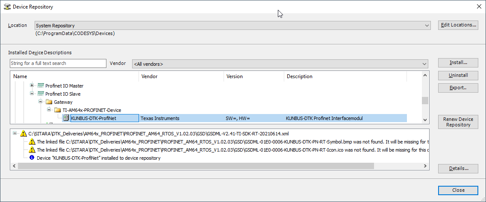
Scan for a Gateway Device and select connected AM64x SITARA Processor.
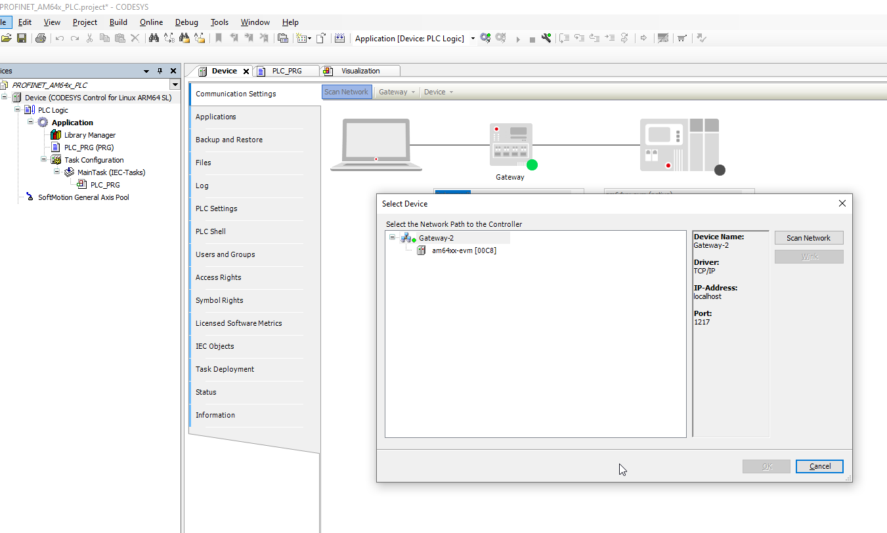
Add an Ethernet Interface and select the Port connected to the PROFINET Network.
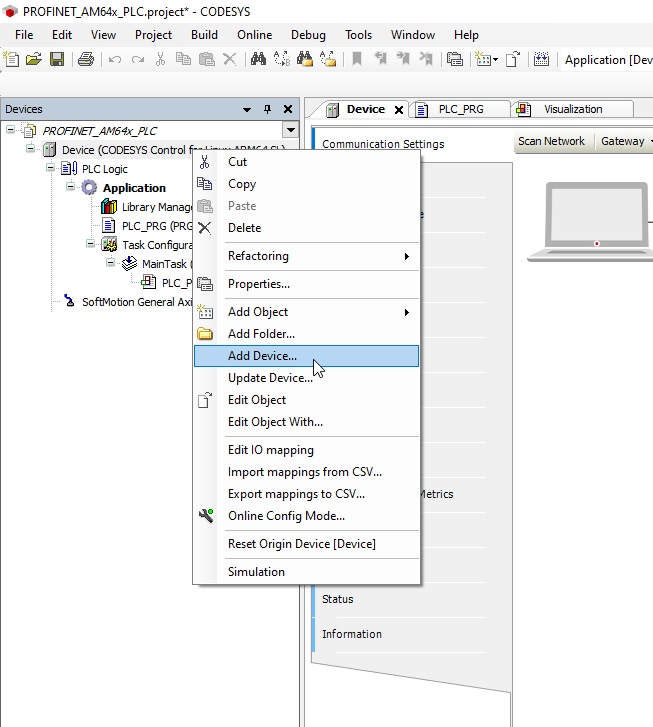
Continue to add a PROFINET Controller to this Ethernet Interface.
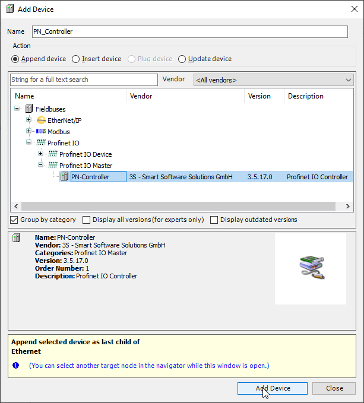
Once complete you can enter Online mode and start your application.
This only starts the PROFINET Controller from where it is possible to scan for connected PROFINET devices.
Provided device description has been installed earlier, the scan process will identify the PROFINET device.
Set a Station Name and an IP Address, the device can now be copied to the project.
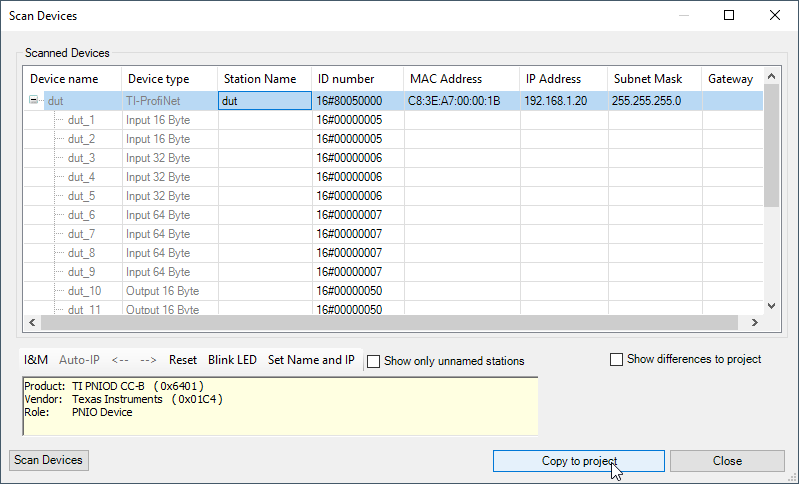
Finally exit Online mode, re-enter Online mode to download the new project structure, and start the application.
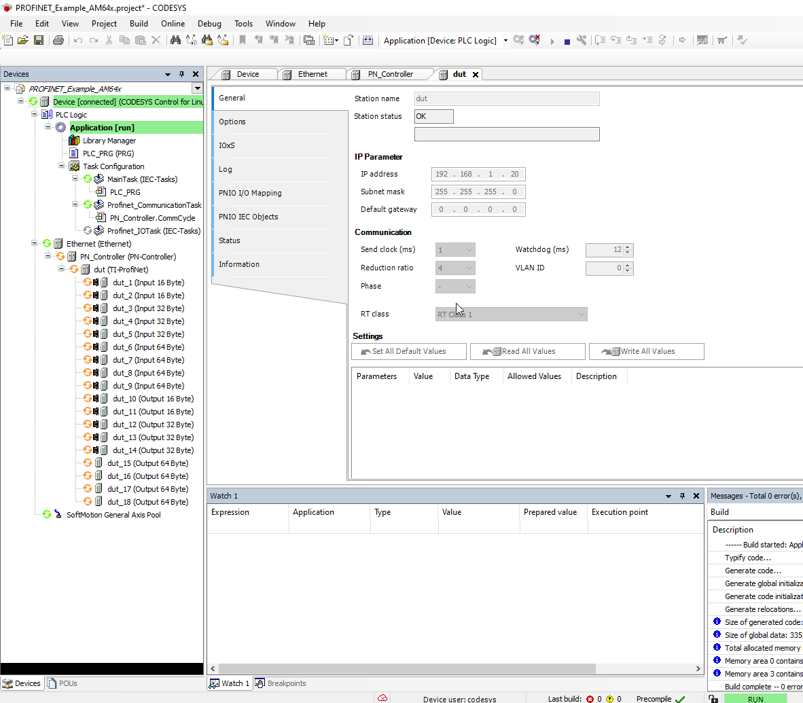
All devices should now be running.
Now you are free to implement your program.
The PROFINET Process Data LEDs can be addressed by mapping the first byte of Process Data Output Buffer to a BYTE variable in your Structured Text Program.
To control the LEDs individually, declare Boolean variables for each.
In your program, shift the Boolean variables to the corresponding bit within the first byte of Process Data Output Buffer.
After the mapping is done, you can assign/manipulate the variables in your program.
For example, you can assign the variables within your program visualization.
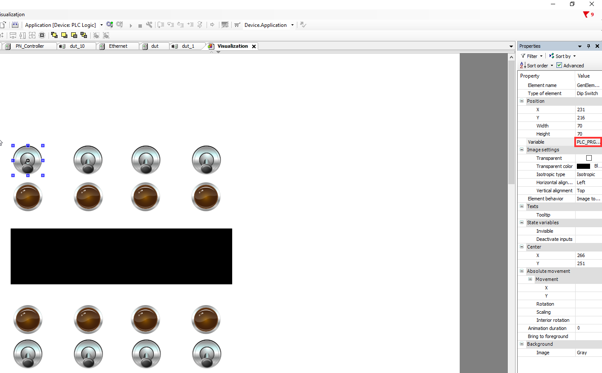
In case you want to monitor the process data changing in CODESYS, navigate to the PROFINET Device PNIO I/O Mapping Tab and select "Enabled 2 (always in bus cycle task)".
 1.9.8
1.9.8